1import java.io.FileInputStream;2import java.util.List;3import org.jdom2.Document;4import org.jdom2.Element;5import org.jdom2.input.SAXBuilder;6public class JDomTest {7 // 使用JDom解析xml文件8 public static void main(String[] args) throws Exception {9 // JDOM本身不包含解析器,无法获取xml中的内容10 // 需要使用sax的解析器进行解析11 // 创建sax解析器对象12 SAXBuilder saxB = new SAXBuilder();13 // 使用sax解析器加载指定xml的文件输入流14 String fileName = "D://teacher/code/javaOOP/src/com/yunhe/day1230/books.xml";15 // 获取指定xml文档的文件对象16 Document d = saxB.build(new FileInputStream(fileName));17 // 首先获取xml文档中数据的根节点(唯一)18 // getRootElement()获取指定文档对象的根节点对象19 Element rootElement = d.getRootElement();20 System.out.println("<"+rootElement.getName()+"");21 // getChildren() 获取当前节点所有字节点对象22 List<Element> children = rootElement.getChildren();23 // 遍历子节点24 for (Element element : children) {25 // 继续获取子节点进行遍历26 List<Element> c2 = element.getChildren();27 for (Element e2 : c2) {28 System.out.println(e2.getValue());}}}}工具类
xxxxxxxxxx461//将给定xml中标签的数据存入集合返回2public class MyJDOM {3 static ArrayList<String> arrValue = new ArrayList<>();4 static ArrayList<String> arrKey = new ArrayList<>();5 public static ArrayList<String> parseURLToValue(String fileName) {6 SAXBuilder saxB = new SAXBuilder();7 try {8 Document d = saxB.build(new FileInputStream(new File(fileName)));9 Element rootElement = d.getRootElement();10 getValue(rootElement);11 } catch (Exception e) {12 e.printStackTrace();}13 return arrValue;}14 public static ArrayList<String> parseURLToKeyValue(String fileName) {15 SAXBuilder saxB = new SAXBuilder();16 try {17 Document d = saxB.build(new FileInputStream(new File(fileName)));18 Element rootElement = d.getRootElement();19 getKeyValue(rootElement);20 } catch (Exception e) {21 e.printStackTrace();}22 return arrValue;}23 public static void getValue(Element element) {24 List<Element> children = element.getChildren();25 if (children.size() == 0) {26 arrValue.add(element.getValue());27 } else {28 for (Element e2 : children) {getValue(e2);}}}29 public static void getKeyValue(Element element) {30 List<Element> children = element.getChildren();31 if (children.size() == 0) {32 arrKey.add(element.getName());33 arrValue.add(element.getValue());34 } else {35 for (Element e2 : children) {36 getKeyValue(e2);37 }38 }39 }40 public static void main(String[] args) {41 String fileName = "D://teacher/code/javaOOP/src/com/yunhe/day1230/books.xml";42// parseURLToKeyValue(fileName);43// for (int i = 0; i < arrValue.size(); i++) {44// System.out.println(arrKey.get(i)+"="+arrValue.get(i));45// }46 ArrayList<String> parseURLToValue = parseURLToValue(fileName);} x1public class Dom4JTest {2 public static void main(String[] args) throws Exception {3 // 创建sax解析器对象4 SAXReader sr = new SAXReader();5 // 使用sax的解析器进行解析文件6 String fileName = "D://teacher/code/javaOOP/src/com/yunhe/day1230/books.xml";7 // 获取指定xml文档的文件对象8 Document d = sr.read(new FileInputStream(fileName));9 //获取根目录元素对象10 Element rootElement = d.getRootElement();11 //获取指定元素对象子元素迭代器对象12 Iterator elementIterator = rootElement.elementIterator();13 while(elementIterator.hasNext()){14 Element e = (Element) elementIterator.next();15 Iterator elementIterator2 = e.elementIterator();16 while(elementIterator2.hasNext()){17 Element e1 = (Element) elementIterator2.next();18 Iterator elementIterator3 = e1.elementIterator();19 while(elementIterator3.hasNext()){20 Element e2 = (Element) elementIterator3.next();21 System.out.println(e2.getName()+" "+e2.getStringValue());22 }23 System.out.println(e.getName()+" "+e.getStringValue());24 25 }26 }27 // System.out.println(rootElement.getStringValue());28 }29}30工具类
xxxxxxxxxx451import java.io.File;2import java.io.FileInputStream;3import java.util.ArrayList;4import java.util.Iterator;56import org.dom4j.Document;7import org.dom4j.Element;8import org.dom4j.io.SAXReader;910//将给定xml中标签的数据存入集合返回11public class MyDOM4J {12 private static final String Element = null;13 static ArrayList<String> arrValue = new ArrayList<>();1415 // 使用JDom解析xml文件16 public static ArrayList<String> parseURLToValue(String fileName) {1718 SAXReader saxB = new SAXReader();19 try {20 Document d = saxB.read(new FileInputStream(new File(fileName)));21 Element rootElement = d.getRootElement();22 getKeyValue(rootElement);23 } catch (Exception e) {24 e.printStackTrace();25 }26 return arrValue;27 }28 public static void getKeyValue(Element element) {29 if (element.isTextOnly()) {30 //System.out.println(element.getStringValue());31 arrValue.add(element.getStringValue());32 } else {33 Iterator elementIterator = element.elementIterator();34 while (elementIterator.hasNext()) {35 Element e = (org.dom4j.Element) elementIterator.next();36 getKeyValue(e);37 }38 }39 }40 public static void main(String[] args) {41 String fileName = "D://teacher/code/javaOOP/src/com/yunhe/day1230/books.xml";42 ArrayList<String> parseURLToValue = parseURLToValue(fileName);43 System.out.println(parseURLToValue);44 }45}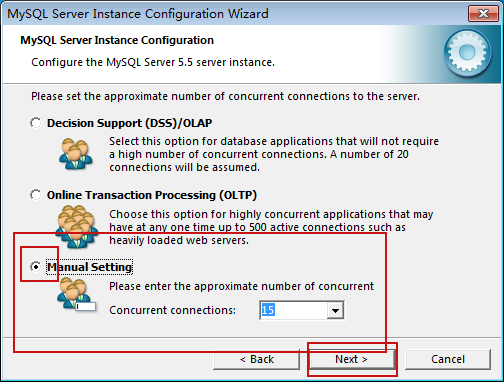
运行同时最大连接数 自定义15个
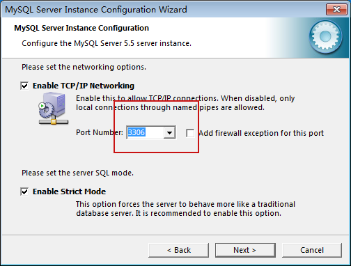
Mysql服务默认端口
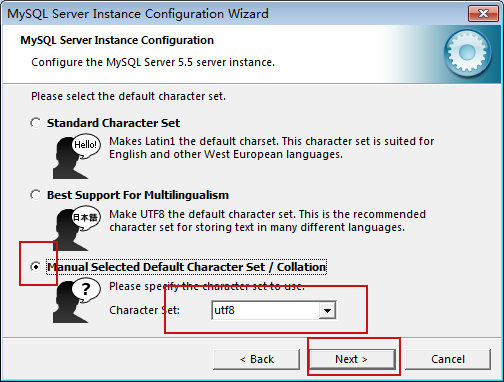
自定义编码格式选择utf-8
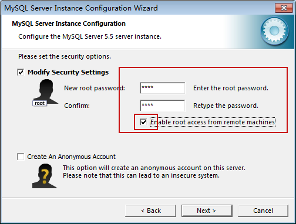
重复输入root账户密码
勾选允许远程连接(除本机外无法连接)
数据库（DB）是存放数据的仓库，只不过这些数据存在一定的关联，并按一定的格式存放在计算机上。从广义上讲，数据不仅包含数字，还包括了文本、图像、音频、视频等。
例如，把学校的学生、课程、学生成绩等数据有序地组织并存放在计算机内，就可以构成一个数据库。因此，数据库由一些持久的相互关联数据的集合组成，并以一定的组织形式存放在计算机的存储介质中。
什么是数据库管理系统
数据库管理系统（Data Base Management System） ，它按一定的数据模型组织数据。
DBMS**应提供如下功能：**
数据定义功能 可定义数据库中的数据对象。
数据操纵功能 可对数据库表进行基本操作，如插入、删除、修改、查询。
数据的完整性检查功能 保证用户输入的数据应满足相应的约束条件。
数据库的安全保护功能 保证只有赋予权限的用户才能访问数据库中的数据。
数据库的并发控制功能 使多个应用程序可在同一时刻并发地访问数据库的数据。
数据库系统的故障恢复功能 使数据库运行出现故障时进行数据库恢复，以保证数据库可靠运行。
什么是数据库系统
数据、数据库、数据库管理系统与操作数据库的应用程序，加上支撑它们的硬件平台、软件平台和与数据库有关的人员一起构成了一个完整的数据库系统。
由后台开发人员进行应用程序的开发,应用
程序的运行需要使用数据,通过相应的管理
软件操纵相应数据,达到应用的需求实现.
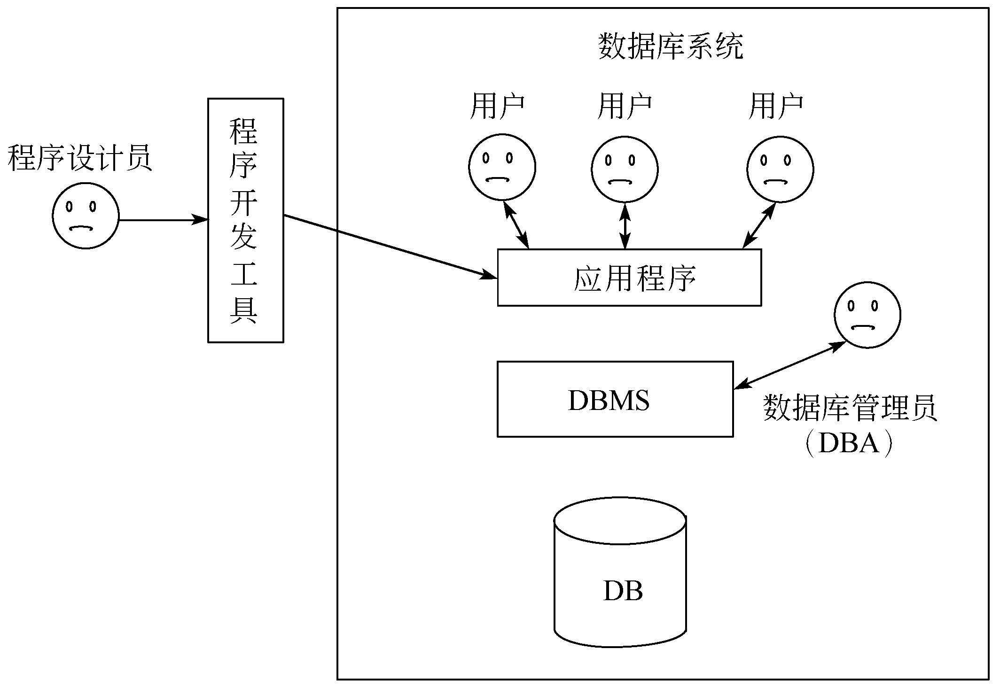
数据库管理系统根据数据模型对数据进行存储和管理，数据库管理系统采用的数据模型主要有层次模型、网状模型和关系模型。
层次模型
以树形层次结构组织数据。
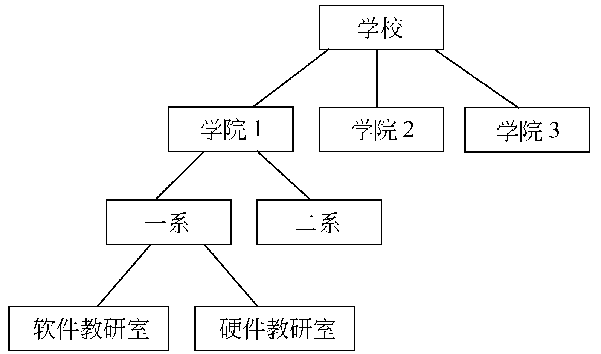
网状模型
每一个数据用一个节点表示，每个节点与其他节点都有联系，这样数据库中的所有数据节点就构成了一个复杂的网络。
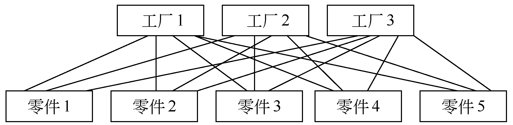
关系模型
以二维表格（关系表）的形式组织数据库中的数据。例如，学生成绩管理系统涉及的学生、课程和成绩三个表。“学生”表涉及的主要信息有学号、姓名、专业名、性别、出生日期、总学分和备注；“课程”表涉及的主要信息有课程号、课程名、学分；“成绩”表涉及的主要信息有学号、课程号和成绩。
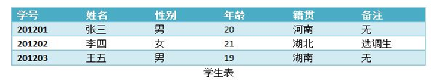
现阶段大部分主流数据库使用的都是此模型,所以现阶段数据库分类就是按照关系模型进行分类
1- 关系型数据库(sqlserver、mysql、Oracle)
2- 非关系型数据库(radis、mongodb)
表格中的一行称为一个记录，一列称为一个字段，每列的标题称为字段名。
如果给每个关系表取一个名字，则有n个字段的关系表的结构可表示为：关系表名（字段名1，…，字段名n），通常把关系表的结构称为关系模式。
什么是码？
在关系表中，如果一个字段或几个字段组合的值可唯一标志其对应记录，则称该字段或字段组合为码。
例如，学生表的“学号”可唯一标志每一个学生，课程表的“课程编号”可唯一标志每一门课，成绩表的“学号”和“课程编号”可唯一标志每一个学生一门课程的成绩。
每一条数据中唯一存在且不重复的数据称之为码,其字段为唯一字段
现在流行的数据库管理系统大多采用关系模型进行数据的组织和管理，因为按关系模型组织的数据表达方式简洁、直观，插入、删除、修改操作方便，而按层次、网状模型组织的数据表达方式复杂，插入、删除、修改操作复杂。因此关系型数据库得以广泛的应用，如Oracle、MySQL、SQLServer、DB2等。
关系型数据库的标准语言是SQL(Structured Query Language，结构化查询语言)
SQL语言的功能包括4个部分
数据定义DDL(create/alter/drop)
用于数据库中库、表的创建修改删除
数据操纵DML(delete/update/insert)
用于表中数据的添加、修改、删除
数据查询DQL(select)
用于表中数据的查询
数据控制DCL(grant/revoke)
用于连接账号的创建与赋权
MySQL是最流行的开放源码SQL数据库管理系统，它是由MySQL AB公司开发、发布并支持的。
MySQL AB是由多名MySQL开发人创办的一家商业公司。它是一家第二代开放源码公司，结合了开放源码价值取向、方法和成功的商业模型。
当前MySQL的版本为MySQL5.X系列，据称该版本是MySQL稳定版本，可以适应于各种生产环境
MySQL的收购历史
MySQL于2008年1月被Sun收购
Sun于2009年4月被Oracle收购，同时MySQL成为Oracle旗下另外一款数据库管理系统
1、 在cmd下进入MySQL数据库管理系统平台
需要配置环境遍历path,将mysql指令设置为全局
都可以使用
Mysql默认安装目录加入path中yi以;分隔
C:\Program Files\MySQL\MySQL Server 5.5\bin
mysql -h主机名 -u用户名 –p密码
h要连接数据库的ip
(如果连接本机数据库可以省略)
u连接数据库使用的账号(root)
p连接数据库使用的密码(root)
2、 退出MySQL数据库管理系统平台
quit
exit
ctrl+c
3、 显示当前已有数据库
SHOW DATABASES [LIKE WILD]
如：SHOW DATABASE LIKE ‘stu%’
或 第二个字母为s的
SHOW DATABASE LIKE ‘_s%’
可以使用“%”和“_”作为通配符
%代表所有任意个数任意字符
_代表站位符可以代表单个任意字符
4、创建数据库
CREATE DATABASE [if not exists] 数据库名
[default character set 字符编码名称]
例如: CREATE DATABASE student;
5、 选择连接数据库
USE 数据库名;
如：USE cat;
6、 删除数据库
DROP DATABASE 数据库名;
如：DROP DATABASE cat;
7、 显示某一数据库中所有的表
SHOW TABLES [FROM 数据库名]
如：SHOW TABLES FROM students;
如果已经执行完use指令那么可以省略指定数据库名的操作;1、 显示某表中索引的信息
SHOW INDEX FROM 表名 [FROM 数据库名]
8、显示某表中所有列的信息
SHOW COLUMNS FROM 表名 [FROM 数据库名[LIKE wild]
DESCRIBE 表名
DESC 表名
会列出当前表所有字段的信息
在MySQL中，给数据库、表、索引、列命名时，要遵循MySQL的命名规则
MySQL**命名可用字符为：**
名称可由服务器所采用字符集中任意字母、数字、“_”和“ $”组成。
名称可按上述任意字符包括数字起头。但是名称不能单独由数字组成，因为那样会使其与数值相混。
数据库、表、列和索引名称最多可由6 4个字符组成。别名最多可长达256个字符。
Mysql中命名规则:字母、数字、下划线、美元符号组成,可以以数字开头但不能为纯数字
Mysql中不区分大小写,java中严格区分大小写,在mysql管理系统中进行sql语句的编写不需要考虑大小写,但在java中进行mysql相关操作需要主要表名与字段的大小写.
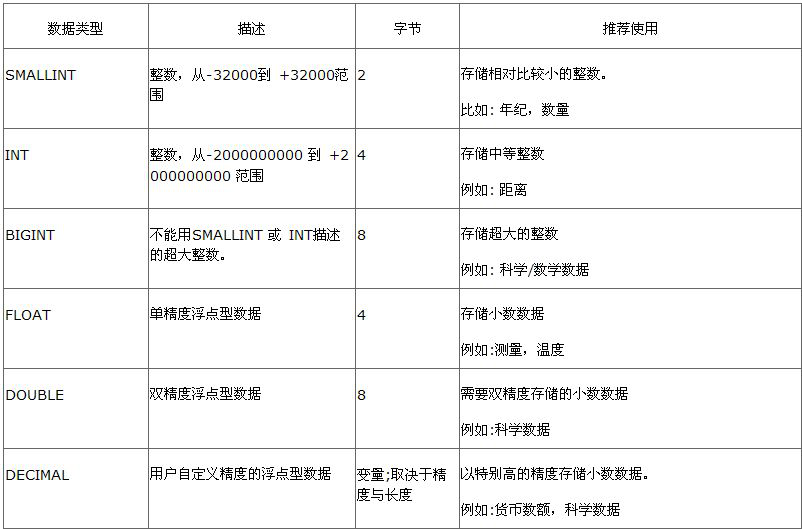
包含数据库的创建、删除,表以及列的创建、修改、删除
数据库的创建
create database 库名
数据库的删除
drop 库名
表的创建
CREATE TABLE 表名(列名 类型(长度) 约束,……)
如： create table student(name varchar(255),age int(3));
表的删除
DROP TABLE 表名;
约束
NOT NULL | NULL：
指定该列是否允许为空。如果不指定，则默认为NULL。
default default_value：
为列指定默认值，默认值必须为一个常数。其中，BLOB和TEXT列不能被赋予默认值。
UNIQUE KEY | PRIMARY KEY：
PRIMARY KEY和UNIQUE KEY都表示字段中的值是唯一的。PRIMARY KEY表示设置为主键，一个表只能定义一个主键，主键一定要为NOT NULL。
COMMENT 'string'：
对于列的描述，string是描述的内容。
多个约束之间使用,分隔
增加列
alter table 表名 add 列名 数据类型
删除列
alter table 表名 drop 列名
更改列
alter table 表名 modify 列名 类型 (用于修改列的保存数据的数据类型与约束)
alter table 表名 change 旧列名 新列名 类型 (相当于删除后重新添加)
重命名表
alter table 旧表名 rename 新表名
包括对把数据库表中的数据进行添加、修改、删除操作
添加数据
INSERT [INTO] 表名[(列名,...)] VALUES (值表达式,...)
Insert into表名(要添加数据的列) values(对应的值)
Insert into表名 values(要添加数据)要求添加所有列的数据t
INSERT [INTO] 表名SET 列名=值表达式, ...
Insert into 表名 set要添加数据的列名=值, 要添加数据的列名=值,…..
INSERT [INTO] 表名1[(列名,...)] SELECT {*|列名,...} FROM表名2
将表2中的数据加入表1,要求数据类型统一且表一字段数据类型长度大于表2
注意:在MySQL3.0.2之后into关键字在INSERT中是可以省略的，但是基于标准考虑建议大家在书写时保留该关键字
修改数据
UPDATE 表名 SET 列名 = 更新后的值,…… WHERE 条件子句
Update 表名 set 列名=值,列名=值…. Where 条件(如果不给where条件子句将会修改所有数据)
将指定列指定值按照条件语句进行修改
删除数据
DELETE FROM 表名 WHERE 子句
Where子句如果不写将删除全部数据
创建student表
存在字段id,int(30)类型 ,name,varchar(255)类型,sex,varchar(3)类型,age,int(3)类型
Id 主键约束
Name 唯一约束,非空约束,默认值zhagnsan
Sex默认值nan
Age默认值0
添加5条数据
分别使用不同的添加方法
1按照要添加的列与值进行添加
2按照全部添加进行添加
3使用set依次添加
4使用已有数据进行添加
5一次添加多条数据
修改指定数据->修改年龄大于10岁的人的姓名改为统一值
删除指定数据->删除所有性别为nan的人
Select * from 表名 查看指定表中所有数据
数据库中建库建表三范式:
第一范式:列唯一性,每一列属性都是不可再分的属性值，确保每一列的原子性,列的属性相近或相似或一样，尽量合并属性一样的列，确保不产生冗余数据。
第二范式:列无关联性,每一列属性,为当前行中唯一属性,列与列之间没有关联(除主键外)
第三范式:主键关联性,每一属性与主键存在唯一关联
多表的创建
在表的创建时,尽量不要将所有数据列存放在唯一一个表中,将表进行功能拆分,不同的表完成不同的唯一功能.使用中间表进行连接
DQL数据查询语言(data query language)
用于数据库中表中数据的查询
select [all | distinct | distinctrow]列名或者表达式列表 from 表名
[where 表达式]
[group by {列名|表达式|列的序号}]
[having 表达式]
[order by {列|表达式|列的序号} {asc|desc}]
查询指定表中所有数据
select * from 表名
查询指定列并去重(不显示重复数据)
select distinct/ distinctrow 列名 from 表名
查询指定表中指定条件的所有列的数据
select * from 表名 where 条件
为表中的列指定别名
Select stuNO as 学号,stuName as 姓名 from students;
Select stuNO 学号,stuName 姓名 from students
为表中的指定别名
在表名后输入表的别名 那么在当条查询语句中都可以使用别名来指代这张表
查询结果为表达式
Select stuName,stuAge + 1 from students;
select stuName,concat(stuAge,‘岁’) from students;
where子句用于限定查询的结果集
where子句后的表达式可以有如下类型的表达式
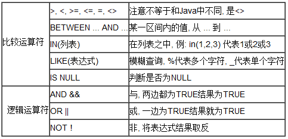
基本算术运算符
>大于
<小于
>=大于等于
<=小于等于
<>不等于也可以使用!=
获取指定区间内的值
Between…and…(包含)
获取指定值中的值
In(值,值,值)(返回指定列表所有匹配的数据的行)
模糊查询
Like _key%
查询为空
Is noll(在mysq中null不能使用=进行判断)
And 并且
Or 或者>
Not取反>
聚合函数的特点:使用完聚合函数无论查询数据有多少条只返回一条数据
count()当前查询数据总条数
select count(*) from students;
select count(stuAge) from students stuSex = ‘男’;
sum()求和(要求数据类型为数值类型)
select sum(stuAge) from students where stuage>18;
avg()
select avg(stuAge) from students where stuSex = ‘男’;
max()/min()
select max(stuAge),min(stuAge) from students where stuSex = ‘男’;
通常与聚合函数一同使用,如果不使用聚合函数,查询结果会将数据丢失,只显示当前分组第一条数据
group by
用于按照指定的规则进行分组或者分类
如：查询男生和女生年龄的最大值和最小值
如：select sex , max(stuAge),min(stuAge) from students
where stuSex in (‘男’,‘女’)
group by sex;
对分组后的数据进行筛选
having
和where子句的作用类似，但是having用于对分组后的数据进行筛选，只能和group by配合使用
如：统计各个班级的人数，但是只选择出人数大于5的信息
如：select count(id) 人数 ,clsId 班级id from students group by clsId having count(id)>5;
order by 字段 排序规则
用于对查询得到的结果集进行排序，排序的方式有两种降序(desc),升序(asc)
如：统计各个班级的人数，但是只选择出人数大于5的信息，同时要求按照人数的升序进行排列。
如：select count(id) 人数 ,clsId 班级id from students group by clsId having count(id)>5order by count(id) asc;
子查询是将一个 SELECT 语句的查询结果作为中间结果，供另一个 SQL 语句调用。MySQL 支持 SQL 标准要求的所有子查询格式和操作，也扩展了特有的几种特性。
子查询没有固定的语法，一个子查询的例子如下：
select stu.stuName from
(select stuName,stuSex from students) stu
where stu.stuSex = ‘男’;
1、 将一条sql语句的结果当做临时表,并起别名,提供给另一条sql语句进行使用
2、 将一条sql语句的结果当做另一条sql语句的条件值
子查询中使用 IN、ANY、SOME 和 ALL 操作符
由于子查询返回的结果集是 N 行一列，因此不能直接使用 = > < >= <= <> 这些比较标量结果的操作符
IN：在指定项内，同 IN(项1,项2,…)。
ANY：与比较操作符联合使用，表示与子查询返回的任何值比较为 TRUE ，则返回 TRUE 。
SOME：ANY 的别名，较少使用。
ALL：与比较操作符联合使用，表示与子查询返回的所有值比较都为 TRUE ，则返回 TRUE 。
EXISTS 和 NOT EXISTS 子查询
该类型的子查询语法为
select 列列表或者表达式列表 from 表名 where exists 子查询
该语法可以理解为：将主查询的数据，放到子查询中做条件验证，根据验证结果（TRUE 或 FALSE）来决定主查询的数据结果是否得以保留。
如：选择目前还没有学生的班级信息
select * from classes where not exists ( select 1 from students where students.clsId = classes.id);
通常在实际应用中需要从两个或者多个表中读取内容，那么此时我们就需要使用表连接的方式进行数据的读取操作
在MySQL中可以支持如下表的连接操作
内连接
外连接
表连接的语法
select 字段列表 from 表名1 INNER|LEFT|RIGHT JOIN 表名2 ON 连接条件
内连接 inner join
什么是内连接？
取得两个表中存在连接匹配关系的记录
将表1中每个字段与表2每个字段匹配产生笛卡尔积然后根据连接条件进行筛选
内连接语法
select 字段列表 from 表名1 inner join 表名2 on 连接条件
select 字段列表 from 表名1,表名2 where 连接条件
左外连接
LEFT JOIN 会取得左表（table1）全部记录，即使右表（table2）并无对应匹配记录
语法：select 列名列表 from 表名1 left join 表名2 on 连接条件
右外连接查询
RIGHT JOIN 会取得右表（table2）全部记录，即使左表（table2）并无对应匹配记录
语法：select 字段列表 from 表名1 right join 表名2 on 连接条件
select [all | distinct | distinctrow]列名或者表达式列表
from 表1
inner|left|right join 表2
on 连接条件
where 表达式
group by {列名|表达式|列的序号}
having 表达式
order by {列|表达式|列的序号} {asc|desc}
首先执行的是连接语句(from后where前):首先根据连接条件将要获取的数据得到
之后执行where条件:将所有数据进一步筛选
执行分组语句group by: 将不同数据以某一字段进行分组
执行having:对分组后的语句使用聚合函数进行条件筛选显示某些组
执行select后的语句:将想要得到的字段进行展示
执行order by将所有经过筛选分组展示的字段按照排序规则进行排序
在mysql中定义好的,我们可以直接写在sql语句中进行调用的方法,称之为函数
字符串函数
字符串函数是MySQL中最常用的一类函数。字符串函数主要用于处理表中的字符串。字符串函数包括求字符串长度、合并字符串、在字符串中插入子串、大小字母之间切换等函数。
计算字符串字符数的函数和字符串长度的函数
CHAR_LENGTH(s)函数计算字符串s的字符数；
LENGTH(s)函数计算字符串s的字节长度。
合并字符串的函数
CONCAT(s1,s2,…)
将要合并的字符串以,分隔填入参数列表,会将指定字符串进行拼接后返回至查询结果
CONCAT_WS(x,s1,s2,…)
两者的不同之处在于CONCAT_WS会使用x将s1和s2隔开
X为分隔符,会将以,分隔的字符串使用指定分隔符进行合并后返回至查询结果
字母大小写转换函数
UPPER(s)函数和UCASE(s)函数将字符串s的所有字母变成大写字母；
LOWER(s)函数和LCASE(s)函数将字符串s的所有字母变成小写字母。
删除空格的函数
LTRIM(s)函数将去掉字符串s开始处的空格；
RTRIM(s)函数将去掉字符串s结尾处的空格；
TRIM(s)函数将去掉字符串s开始处和结尾处的空格。
删除指定字符串的函数
TRIM(s1 FROM s)函数将去掉字符串s中开始处和结尾处的字符串s1。
去除前后指定字符串,如果继续匹配继续去除
截取字符串函数
substring(s,n,len)函数
substring(s from n for len)
MID(s,n,len)函数
从字符串s的第n个位置开始获取长度为len的字符串。(从1开始为第一位)
数学函数是MySQL中常用的一类函数。主要用于处理数字，包括整型、浮点数等。数学函数包括绝对值函数、正弦函数、余弦函数、获取随机数的函数等。
绝对值函数ABS(x)
返回圆周率的函数PI()
平方根函数SQRT(x)
求余函数MOD(x,y)
获取整数的函数
CEIL(x)和CEILING(x)这两个函数返回大于或等于x的最小整数；
FLOOR(x)函数返回小于或等于x的最大整数。
获取随机数的函数
RAND()和RAND(x)这两个函数都是返回0～1的随机数。但是RAND()返回的数是完全随机的，而RAND(x)函数的x相同时返回的值是相同的。即，如果一个整数参数x被指定，它被当做种子值使用(用于产生一个可重复的数值)。
四舍五入函数
ROUND(x)函数返回离x最近的整数，也就是对x进行四舍五入处理；
ROUND(x,y)函数返回x保留到小数点后y位的值，截断时需要进行四舍五入处理；
TRUNCATE(x,y)函数返回x保留到小数点后y位的值。
日期和时间函数是MySQL中另一类最常用的函数。日期和时间函数主要用于处理表中的日期和时间数据。日期和时间函数包括获取当前日期的函数、获取当前时间的函数、计算日期的函数、计算时间的函数等
获取当前日期的函数
CURDATE()和CURRENT_DATE()函数获取当前日期
获取当前时间的函数
CURTIME()和CURRENT_TIME()函数获取当前时间
获取当前日期时间的函数
NOW()、CURRENT_TIMESTAMP()、LOCALTIME()和SYSDATE()这四个函数都用来获取当前的日期和时间。这四个函数表示相同的含义。
获取月份的函数
MONTH(d)函数返回日期d中的月份值，其取值范围是1~12；
MONTHNAME(d)函数返回日期d中的月份的英文名称，如January,February等。
其中，参数d可以是日期和时间，也可以是日期。
SELECT MONTH('2011-05-09 23:11:23'), MONTHNAME('2011-05-09');
获取星期的函数
DAYNAME(d)函数返回日期d是星期几，显示其英文名，如Monday,Tuesday等；
DAYOFWEEK(d)函数也返回日期d是星期几，1表示星期日，2表示星期一，依次类推；
WEEKDAY(d)函数也返回日期d是星期几，0表示星期一，1表示星期二，依次类推。
其中，参数d可以是日期和时间，也可以是日期。
SELECT DAYNAME('2011-05-09'), DAYOFWEEK('2011-05-09'), WEEKDAY ('2011-05-09');
获取星期数的函数
WEEK(d)函数和WEEKOFYEAR(d)函数都是计算日期d是本年的第几个星期。返回值的范围是1~53。
获取天数的函数
DAYOFYEAR(d)函数日期d是本年的第几天；
DAYOFMONTH(d)函数返回计算日期d是本月的第几天。
获取年份、季度、小时、分钟、秒钟的函数
YEAR(d)函数返回日期d中的年份值；
QUARTER(d)函数返回日期d是本年第几季度，值的范围是1~4；
HOUR(t)函数返回时间t中的小时值；
MINUTE(t)函数返回时间t中的分钟值；
SECOND(t)函数返回时间t中的秒钟值。
将日期和时间格式化的函数
DATE_FORMAT(date,format)日期格式化函数；
TIME_FORMAT(time,format)时间格式化函数。
DATE_FORMAT也可以time进行格式化,但是TIME_FORMAT不能对date进行格式化
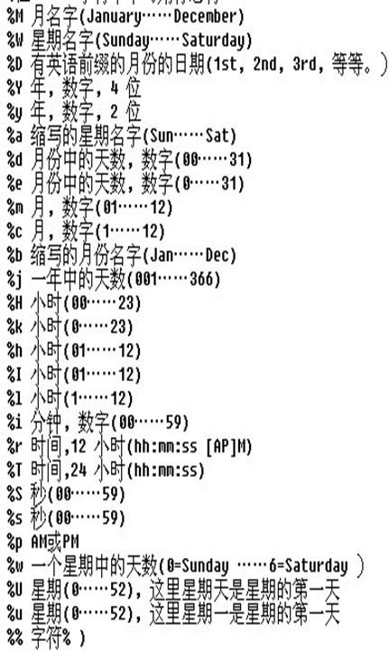
硬件:提升硬件性能(贵的)
软件:通过相应配置文件配置提升执行效率
语句:
1、 尽量少作计算
2、 尽量少使用连接查询
3、 尽量少排序
4、 不要使用select *
5、 尽量使用连接查询代替子查询
6、 尽量少使用or 使用union all 或者是union代替
7、 尽量使用union all代替union
8、 使用索引(目录)
9、 避免出现类型转换(where字段匹配数据与字段数据类型匹配)
10、 优先优化高并发的 SQL，而不是执行频率低某些“大”SQL(在项目的sql语句优化中,首先优化被频繁使用的sql)
11、 从全局出发优化，而不是片面调整
12、 知道运行在mysql中的大部分sql的具体情况
表结构优化
1、尽量不要使用null
2、Null会使索引维护复杂,推荐索引列使用not null
3、查询结果出错,not in !=查询结果在null下 总是空
4、需要额外判断是否为null
5、与该列其他值数据类型不匹配出错
6、优化字段结构(一定在初期建表时优化)
将表创建时以指定功能进行详细划分,不会出现不同功能数据存在同一张表,或者当前表中存在与当前表无关数据,多表之间通过关联表进行关联.
mysql的优化大的有两方面： 1、配置优化 配置的优化其实包含两个方面的：操作系统内核的优化和mysql配置文件的优化 1)系统内核的优化对专用的mysql服务器来说，无非是内存实用、连接数、超时处理、TCP处理等方面的优化，根据自己的硬件配置来进行优化，这里不多讲； 2)mysql配置的优化，一般来说包含：IO处理的常用参数、最大连接数设置、缓存使用参数的设置、慢日志的参数的设置、innodb相关参数的设置等，如果有主从关系在设置主从同步的相关参数即可，网上的相关配置文件很多，大同小异，常用的设置大多修改这些差不多就够用了。 2、sql语句的优化 1、 尽量少作计算 Mysql的作用是用来存取数据的，不是做计算的，做计算的话可以用其他方法去实现，mysql做计算是很耗资源的。 2.尽量少 join MySQL 的优势在于简单，但这在某些方面其实也是其劣势。MySQL 优化器效率高，但是由于其统计信息的量有限，优化器工作过程出现偏差的可能性也就更多。对于复杂的多表 Join，一方面由于其优化器受限，再者在 Join 这方面所下的功夫还不够，所以性能表现离 Oracle 等关系型数据库前辈还是有一定距离。但如果是简单的单表查询，这一差距就会极小甚至在有些场景下要优于这些数据库前辈。 3.尽量少排序 排序操作会消耗较多的 CPU 资源，所以减少排序可以在缓存命中率高等 IO 能力足够的场景下会较大影响 SQL的响应时间。 对于MySQL来说，减少排序有多种办法，比如： 通过利用索引来排序的方式进行优化 减少参与排序的记录条数 非必要不对数据进行排序 4.尽量避免 select * 在数据量少并且访问量不大的情况下，select * 没有什么影响，但是量级达到一定级别的时候，在执行效率和IO资源的使用上，还是有很大关系的，用什么字段取什么字段，减少不必要的资源浪费。 之前遇到过因为一个字段存储的数据比较大，并发高的情况下把网络带宽跑满的情况，造成网站打不开或是打开速度极慢的情况。 5.尽量用 join 代替子查询 虽然 Join 性能并不佳，但是和 MySQL 的子查询比起来还是有非常大的性能优势。MySQL 的子查询执行计划一直存在较大的问题，虽然这个问题已经存在多年，但是到目前已经发布的所有稳定版本中都普遍存在，一直没有太大改善。虽然官方也在很早就承认这一问题，并且承诺尽快解决，但是至少到目前为止我们还没有看到哪一个版本较好的解决了这一问题。 6.尽量少 or 当 where 子句中存在多个条件以“或”并存的时候，MySQL 的优化器并没有很好的解决其执行计划优化问题，再加上 MySQL 特有的 SQL 与 Storage 分层架构方式，造成了其性能比较低下，很多时候使用 union all 或者是union(必要的时候)的方式来代替“or”会得到更好的效果。 7.尽量用 union all 代替 union union 和 union all 的差异主要是前者需要将两个(或者多个)结果集合并后再进行唯一性过滤操作，这就会涉及到排序，增加大量的 CPU 运算，加大资源消耗及延迟。所以当我们可以确认不可能出现重复结果集或者不在乎重复结果集的时候，尽量使用 union all 而不是 union。 8.尽量早过滤 这一优化策略其实最常见于索引的优化设计中(将过滤性更好的字段放得更靠前)。 在 SQL 编写中同样可以使用这一原则来优化一些 Join 的 SQL。比如我们在多个表进行分页数据查询的时候，我们最好是能够在一个表上先过滤好数据分好页，然后再用分好页的结果集与另外的表 Join，这样可以尽可能多的减少不必要的 IO 操作，大大节省 IO 操作所消耗的时间。 9.避免类型转换 这里所说的“类型转换”是指 where 子句中出现 column 字段的类型和传入的参数类型不一致的时候发生的类型转换： A:人为在column_name 上通过转换函数进行转换 直接导致 MySQL(实际上其他数据库也会有同样的问题)无法使用索引，如果非要转换，应该在传入的参数上进行转换 B:由数据库自己进行转换 如果我们传入的数据类型和字段类型不一致，同时我们又没有做任何类型转换处理，MySQL 可能会自己对我们的数据进行类型转换操作，也可能不进行处理而交由存储引擎去处理，这样一来，就会出现索引无法使用的情况而造成执行计划问题。 以上两种情况在开发者因为某种原因经常会有，本来可以用到索引的结果类型不对没有用到索引，或是因为类型不对又有越界的情况发生造成无法使用索引的情况，结果造成很严重的事故。 10.优先优化高并发的 SQL，而不是执行频率低某些“大”SQL 对于破坏性来说，高并发的 SQL 总是会比低频率的来得大，因为高并发的 SQL 一旦出现问题，甚至不会给我们任何喘息的机会就会将系统压跨。而对于一些虽然需要消耗大量 IO 而且响应很慢的 SQL，由于频率低，即使遇到，最多就是让整个系统响应慢一点，但至少可能撑一会儿，让我们有缓冲的机会。 11.从全局出发优化，而不是片面调整 SQL 优化不能是单独针对某一个进行，而应充分考虑系统中所有的 SQL，尤其是在通过调整索引优化 SQL 的执行计划的时候，千万不能顾此失彼，因小失大。 12.尽可能对每一条运行在数据库中的SQL进行 explain 优化 SQL，需要做到心中有数，知道SQL 的执行计划才能判断是否有优化余地，才能判断是否存在执行计划问题。在对数据库中运行的 SQL 进行了一段时间的优化之后，很明显的问题 SQL 可能已经很少了，大多都需要去发掘，这时候就需要进行大量的 explain 操作收集执行计划，并判断是否需要进行优化。
- 表结构优化
1、尽量不要使用null
2、Null会使索引维护复杂,推荐索引列使用not null
3、查询结果出错,not in !=查询结果在null下 总是空
4、需要额外判断是否为null
5、与该列其他值数据类型不匹配出错
6、优化字段结构(一定在初期建表时优化)
索引
创建索引时，你需要确保该索引是应用在 SQL 查询语句的条件(一般作为 WHERE 子句的条件)。
实际上，索引也是一张表，该表保存了主键与索引字段，并指向实体表的记录。
都在说使用索引的好处，但过多的使用索引将会造成滥用。因此索引也会有它的缺点：虽然索引大大提高了查询速度，同时却会降低更新表的速度，如对表进行INSERT、UPDATE和DELETE。因为更新表时，MySQL不仅要保存数据，还要保存一下索引文件。
建立索引会占用磁盘空间的索引文件。
Mysql中索引类型一共分为4种
1主键索引 primary key
2普通索引 index
3唯一索引 unique
4全文索引 fulltext
主键索引
表的唯一主键,不能为null,列不能存在重复数据,唯一索引的一种
普通索引
创建索引
这是最基本的索引，它没有任何限制。它有以下几种创建方式：
- 直接创建
CREATE INDEX 索引名 ON 表名(列名(length));
如果是CHAR，VARCHAR类型，length可以小于字段实际长度；如果是BLOB和TEXT类型，必须指定 length。
2.修改表结构(添加索引)
ALTER table 表名 ADD INDEX 索引名(列名)
3.创建表的时候直接指定
CREATE TABLE mytable(
ID INT NOT NULL,
username VARCHAR(16) NOT NULL,
INDEX [索引名] (username(length)) );
删除索引
通过索引名进行删除
DROP INDEX [索引名] ON 表名;
唯一索引
它与前面的普通索引类似，不同的就是：索引列的值必须唯一，但允许有空值。
创建索引
CREATE UNIQUE INDEX 索引名 ON 表名(字段(length))
修改表结构
ALTER table 表名 ADD UNIQUE [索引名] (字段(length))
创建表的时候直接指定
CREATE TABLE mytable(
ID INT NOT NULL,
username VARCHAR(16) NOT NULL,
UNIQUE [索引名] (username(length)) );
使用ALTER 命令添加和删除索引
有四种方式来添加数据表的索引：
ALTER TABLE 表名 ADD PRIMARY KEY (列名): 该语句添加一个主键，这意味着索引值必须是唯一的，且不能为NULL。
ALTER TABLE 表名 ADD UNIQUE 索引名 (列名): 这条语句创建索引的值必须是唯一的（除了NULL外，NULL可能会出现多次）。
ALTER TABLE 表名 ADD INDEX 索引名 (列名): 添加普通索引，索引值可出现多次。
ALTER TABLE 表名 ADD FULLTEXT 索引名 (列名):该语句指定了索引为 FULLTEXT ，用于全文索引。
全文索引
全文索引的索引类型为FULLTEXT。全文索引可以在varchar、char、text类型的列上创建。可以通过ALTER TABLE或CREATE INDEX命令创建。对于大规模的数据集，通过ALTER TABLE（或者CREATE INDEX）命令创建全文索引要比把记录插入带有全文索引的空表更快。MyISAM支持全文索引，InnoDB在mysql5.6之后支持了全文索引。 全文索引不支持中文需要借sphinx(coreseek)或迅搜<、code>技术处理中文。
alter table 表名 add fulltext(字段名);
JDBC是Java数据库连接技术的简称，提供连接各种常用数据库的能力
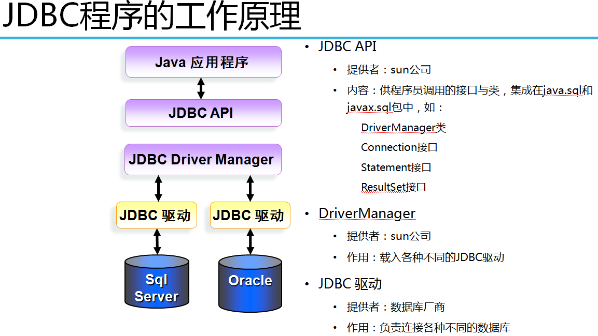
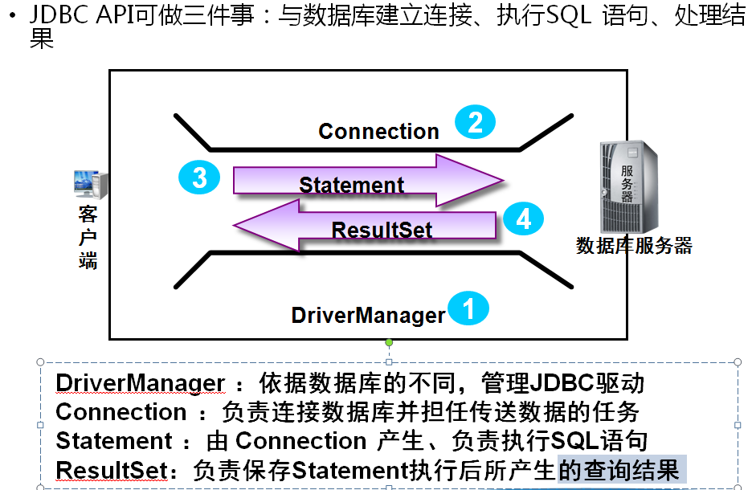
JDBC驱动程序管理器 DriverManager：
是JDBC的管理层，作用于用户和驱动程序之间。它跟踪可用的驱动程序，并在数据库和相应的驱动程序之间建立连接。
JDBC标准规定：所有的驱动程序类必须包含一个静态部分。这个静态部分在加载该实例时由DriverManager类进行注册。
用户在正常情况下将不会直接调用DriverManager.regiserDriver方法，而是在加载驱动程序时由驱动程序自动调用。
注册驱动程序：
Class.forName(“com.microsoft.sqlserver.jdbc. SQLServerDriver”);
Class.forName(“sun.jdbc.odbc.JdbcOdbcDriver”);
Class.forName( "oracle.jdbc.driver.OracleDriver ");
注册的驱动程序类名称必须在用户的classPath中。
DriverManger的方法：
static Connection getConnection(String url,String user,String password):
url: jdbc :
: 协议：jdbc表示协议，它是唯一的，jdbc只有这一个协议。
子协议：主要用于识别数据库驱动程序，（不同的数据库驱动程序不同。）
子名：属于专门的驱动程序。
数据源名。
------URL示例------
jdbc:sqlserver://localhost:1433; DatabaseName=news //SQLServer的URL
jdbc:oracle:thin:@localhost:1521:orcl //oracle的URL
jdbc:mysql://localhost:3306/dbname //mysql 的URL
jdbc连接数据库步骤
1、 加载相应数据库驱动jar包Class.forname()
2、 创建连接DriverManager. getConnection**()**
3、 获取数据库语句执行对象con.cereateStatement()
4、 准备sql
5、 执行sql(查询语句处理结果集)executeUpdate/executeQuery/next/getObject()
6、 关闭(对查询额外关闭结果集)close()
xxxxxxxxxx431//jdbc连接数据库2 //1、加载驱动3 //创建指定连接数据库驱动的class对象4 //使用Class.forName("数据库驱动名")5 //不需要声明Class对象接受6 //加载驱动只需要创建出指定驱动对象即可7 Class.forName("com.mysql.jdbc.Driver");8 9 //2、获取连接10 //使用DriverManager的静态方法,填入连接地址,连接用户名,连接密码返回连接对象11 //mysql url语法:jdbc:连接数据驱动名://ip地址:端口号/连接数据库名12 String url="jdbc:mysql://localhost:3306/school";13 String user="root";14 String password="root";15 Connection con = DriverManager.getConnection(url, user, password);16 17 //3、创建statement对象对要执行的sql进行预编译18 //使用createStatement方法创建stattement对象19 Statement statement = con.createStatement();20 21 //4、准备要执行的sql语句(修改、查询)22 //修改23 String updateSql="update student set studentsex='女' where studentage =22";24 //查询25 String selectSql="select * from student";26 //5、执行sql语句27 //使用statement对象调用相应方法执行sql语句28 //修改executeUpdate返回int类型 当前语句执行后影响数据的条数29 int Update = statement.executeUpdate(updateSql);30 //System.out.println(Update);31 //查询executeQuery返回resultSet类型 返回查询数据结果集对象32 ResultSet Query = statement.executeQuery(selectSql);33 //处理结果集34 //next方法判断下一行是否还有数据35 while(Query.next()){36 System.out.print(Query.getString(1)+" ");37 System.out.print(Query.getString(2)+" ");38 System.out.println(Query.getInt("studentage"));39 }40 //6、关闭41 Query.close();42 statement.close();43 con.close();ORM（Object Relational Mapping）框架采用元数据来描述对象一关系映射细节，元数据一般采用XML格式，并且存放在专门的对象一映射文件中。
只要提供了持久化类与表的映射关系，ORM框架在运行时就能参照映射文件的信息，把对象持久化到数据库中。当前ORM框架主要有五种：Hibernate(Nhibernate)，iBATIS，mybatis，EclipseLink，JFinal。
ORM是通过使用描述对象和数据库之间映射的元数据,在我们想到描述的时候自然就想到了xml和特性(Attribute).目前的ORM框架中,Hibernate就是典型的使用xml文件作为描述实体对象的映射框架,而大名鼎鼎的Linq则是使用特性(Attribute)来描述的。
什么是ORM
即Object-Relationl Mapping，它的作用是在关系型数据库和对象之间作一个映射，这样，我们在具体的操作数据库的时候，就不需要再去和复杂的SQL语句打交道，只要像平时操作对象一样操作它就可以了 。
在java中orm的使用,将数据库的表名当做类名,将数据库的字段当做类的属性,数据就是集合形式存储指定类对象,每个具体的对象都是一条数据
在sql语句执行前进行预编译,大致在执行前就可以返回sql语句相关的信息(预先执行)
如果出错,那么在执行前预编译阶段就会报错
将sql中的参数编译进入sql语句
可以有效的防止sql注入
Select * from user where username= ai and password = ashdajvjasvdjasvj or 1=1
使用PreparedStatement预编译生成的sql
Select * from user where username= ? and password = ?
Select * from user where username= ‘ai’ and password = ‘ashdajvjasvdjasvj or 1=1’
写在参数列表最后,使用…代替 本质返回的是一个数组语法(数据类型… 变量名)
当调用含有不确定参数的方法时,使用,进行分割,若不想输入可以不写,方法执行时,会将所有数据以数组的形式返回
PreparedStatement预编译语句
在sql执行前进行预编译提前检测语法错误
在预编译时将参数填入防止sql注入
xxxxxxxxxx261Properties properties = new Properties();2 InputStream in = MyDButil.class.getClassLoader().getResourceAsStream("jdbc.properties");3 properties.load(in);4 String driver = properties.getProperty("driver");5 String url = properties.getProperty("url");6 String user = properties.getProperty("user");7 String password = properties.getProperty("password");8 9 10 Class.forName(driver);11 Connection con = DriverManager.getConnection(url, user, password);12// String sql="select * from student where studentsex=?";13 String sql="update student set studentsex=? where studentage<?";14 PreparedStatement ps = con.prepareStatement(sql);15// ps.setObject(1, "as");16 ps.setObject(1, "女");17 ps.setObject(2, 20);18 int executeUpdate = ps.executeUpdate();19 System.out.println(executeUpdate);20// ResultSet rs = ps.executeQuery();21// while(rs.next()){22// System.out.println(rs.getString(1));23// }24// rs.close();25 ps.close();26 con.close();Mysql中虽然存在时间类型,但是数据库中的date类型只保存年月日,time类型只保存时分秒,只有datetime类型保存年月日时分秒与java中的date类似,但不相同,java提供了数据库特有的日期类型date进行保存数据库中日期类型数据
对应java中的时间数据类型java中使用相应类型进行保存
Java mysql
com.sql.Date date
com.sql.Time time
com.sql. Timestamp datetime
com.sql. Timestamp timestamp
xxxxxxxxxx251 Properties properties = new Properties();2 InputStream in = MyDButil.class.getClassLoader().getResourceAsStream("jdbc.properties");3 properties.load(in);4 String driver = properties.getProperty("driver");5 String url = properties.getProperty("url");6 String user = properties.getProperty("user");7 String password = properties.getProperty("password");8 Class.forName(driver);9 Connection con = DriverManager.getConnection(url, user, password);10 String sql = "select * from test";11 PreparedStatement ps = con.prepareStatement(sql);12 ResultSet rs = ps.executeQuery();13 while(rs.next()){14 Date date1 = (Date) rs.getObject(1);15 Time date2 = (Time) rs.getObject(2);16 Timestamp date3 = (Timestamp) rs.getObject(3);17 Timestamp date4 = (Timestamp) rs.getObject(4);18 System.out.print(date1+"/");19 System.out.print(date2+"/");20 System.out.print(date3+"/");21 System.out.println(date4);22 }23 rs.close();24 ps.close();25 con.close();一、什么是事务？
在人员管理系统中，你删除一个人员，你即需要删除人员的基本资料，也要删除和该人员相关的信息，如信箱，文章等等，这样，这些数据库操作语句就构成一个事务！
二、事务是必须满足4个条件（ACID）
· 事务的原子性（ Atomicity）：一组事务，要么成功；要么撤回。
· 一致性 （Consistency）：事务执行后，数据库状态与其他业务规则保持一致。如转账业务，无论事务执行成功否，参与转账的两个账号余额之和应该是不变的。
· 隔离性（Isolation）：事务独立运行。一个事务处理后的结果，影响了其他事务，那么其他事务会撤回。事务的100%隔离，需要牺牲速度。
· 持久性（Durability）：软、硬件崩溃后，InnoDB数据表驱动会利用日志文件重构修改。可靠性和高速度不可兼得， innodb_flush_log_at_trx_commit 选项 决定什么时候吧事务保存到日志里。
三、MySQL中的事务
在默认情况下，MySQL每执行一条SQL语句，都是一个单独的事务。如果需要在一个事务中包含多条SQL语句，那么需要开启事务和结束事务。
· 开启事务：start transaction
· 结束事务：commit或rollback
在执行SQL语句之前，先执行start transaction，这就开启了一个事务（事务的起点），然后可以去执行多条SQL语句，最后要结束事务，commit表示提交，即事务中的多条SQL语句所作出的影响会持久到数据库中，或者rollback，表示回滚到事务的起点，之前做的所有操作都被撤销了。
四、JDBC事务
在JDBC中处理事务，都是通过Connection完成的。
同一事务中所有的操作，都在使用同一个Connection对象。
①JDBC中的事务
Connection的三个方法与事务有关：
· setAutoCommit（boolean）:设置是否为自动提交事务，如果true（默认值为true）表示自动提交，也就是每条执行的SQL语句都是一个单独的事务，如果设置为false，那么相当于开启了事务了；con.setAutoCommit(false) 表示开启事务。
· commit（）：提交结束事务。
· rollback（）：回滚结束事务。
JDBC处理事务的代码格式：
xxxxxxxxxx71try{2 con.setAutoCommit(false);//开启事务3 ......4 con.commit();//try的最后提交事务 5} catch（） {6 con.rollback();//回滚事务7}五、事务隔离级别
1、事务的并发读问题
· 脏读：读取到另外一个事务未提交数据（不允许出来的事）；
· 不可重复读：两次读取不一致；
· 幻读（虚读）：读到另一事务已提交数据。
2、并发事务问题
因为并发事务导致的问题大致有5类，其中两类是更新问题三类是读问题。
· 脏读（dirty read）：读到另一个事务的未提交新数据，即读取到了脏数据；
· 不可重复读（unrepeatable）：对同一记录的两次读取不一致，因为另一事务对该记录做了修改；
· 幻读（虚读）（phantom read）：对同一张表的两次查询不一致，因为另一事务插入了一条记录。
3、四大隔离级别
4个等级的事务隔离级别，在相同的数据环境下，使用相同的输入，执行相同的工作，根据不同的隔离级别，可以导致不同的结果。不同事务隔离级别能够解决的数据并发问题的能力是不同的。
1SERIALIZABLE(串行化)
· 不会出现任何并发问题，因为它是对同一数据的访问是串行的，非并发访问的；
· 性能最差
2、REPEATABLE READ(可重复读)（MySQL）
· 防止脏读和不可重复读，不能处理幻读
· 性能比SERIALIZABLE好
3、READ COMMITTED(读已提交数据)（Oracle）
· 防止脏读，不能处理不可重复读和幻读；
· 性能比REPEATABLE READ好
4、READ UNCOMMITTED(读未提交数据)
· 可能出现任何事物并发问题，什么都不处理。
· 性能最好
六、MySQL隔离级别
MySQL的默认隔离级别为Repeatable read,可以通过下面语句查看：
SELECT @@
TX_ISOLATION;也可以通过下面语句来设置当前连接的隔离级别：
SET TRANSACTION ISOLATION LEVEL REPEATABLE READ ;//[4选1]
七、JDBC设置隔离级别
con.setTransactionIsolation(int level) :参数可选值如下：
· Connection.TRANSACTION_READ_UNCOMMITTED；
· Connection.TRANSACTION_READ_COMMITTED；
· Connection.TRANSACTION_REPEATABLE_READ；
· Connection.TRANSACTION_READ_SERIALIZABLE。
用于存放数据库连接对象Connection的集合,通过配置文件进行大小连接个数的配置,用来创建保存数据库连接对象,当需要进行数据库操作时,无需创建直接使用,当到达空闲时间后,自动回收等待使用.
在连接池对象创建初期根据配置文件配置,创建多个连接对象,当有用户需要使用连接时,从中选择一个连接对象交由指定对象使用,使用完毕进行回收.当连接对象不够时,会自动创建连接对象.
导入jar包：mchange-commons-java-0.2010.jar c3p0-0.95.1.jar
书写默认配置文件c3p0-config.xml
xxxxxxxxxx211 2<c3p0-config>3 <!-- 这是默认配置信息 -->4 <default-config>5 <!-- 连接四大参数配置 -->6 <property name="jdbcUrl">jdbc:mysql://localhost:3306/school</property>7 <property name="driverClass">com.mysql.jdbc.Driver</property>8 <property name="user">root</property>9 <property name="password">root</property>10 <!-- 池参数配置 -->11 <!-- 当全部连接被使用有新的获取连接请求时 创建的连接对象数 -->12 <property name="acquireIncrement">3</property>13 <!-- 初始化连接池中创建连接对象个数 -->14 <property name="initialPoolSize">10</property>15 <!-- 当前连接池中最少连接对象个数 -->16 <property name="minPoolSize">2</property>17 <!-- 当前连接池中最多连接对象个数 -->18 <property name="maxPoolSize">10</property>19 </default-config>20</c3p0-config>21获取连接
xxxxxxxxxx91import java.sql.Connection;2import java.sql.SQLException;3import com.mchange.v2.c3p0.ComboPooledDataSource;4public class C3P0Test {5 public static void main(String[] args) throws SQLException {6 ComboPooledDataSource cpds = new ComboPooledDataSource();7 Connection connection = cpds.getConnection(); 8 }9}Jdbc工具类
xxxxxxxxxx13112import java.lang.reflect.Field;3import java.sql.Connection;4import java.sql.PreparedStatement;5import java.sql.ResultSet;6import java.sql.ResultSetMetaData;7import java.sql.SQLException;8import java.util.ArrayList;9import com.mchange.v2.c3p0.ComboPooledDataSource;10//jdbc工具类11//1、提供获取连接方法(由连接池提供)12//2、更新方法返回影响数据个数13//3、查询方法返回指定数据集合14public class AiUtil {15 private final static ComboPooledDataSource C3P0 = new ComboPooledDataSource();1617 // 通过单例连接池对象获取连接18 public static Connection getConnection() {19 Connection connection = null;20 try {21 connection = C3P0.getConnection();22 } catch (SQLException e) {23 e.printStackTrace();24 }25 return connection;26 }2728 // 更新数据29 // 使用不确定参数 动态获取不同sql语句中?对应的值30 public static int update(String sql, Object... o) {31 // 从连接池获取连接32 Connection connection = getConnection();33 PreparedStatement ps = null;34 int executeUpdate = 0;35 try {36 // 使用sql创建预编译语句37 ps = connection.prepareStatement(sql);38 // 将不确定参数生成的数组值填入sql39 for (int i = 1; i <= o.length; i++) {40 ps.setObject(i, o[i - 1]);41 }42 // 执行sql返回影响条数43 executeUpdate = ps.executeUpdate();44 } catch (SQLException e) {45 e.printStackTrace();46 }47 return executeUpdate;48 }4950 // 更新数据 支持事务方法 传入关闭自动提交事务的连接51 // 使用不确定参数 动态获取不同sql语句中?对应的值52 public static int update(Connection connection, String sql, Object... o) {53 // 从连接池获取连接54 PreparedStatement ps = null;55 int executeUpdate = 0;56 try {57 // 使用sql创建预编译语句58 ps = connection.prepareStatement(sql);59 // 将不确定参数生成的数组值填入sql60 for (int i = 1; i <= o.length; i++) {61 ps.setObject(i, o[i - 1]);62 }63 // 执行sql返回影响条数64 executeUpdate = ps.executeUpdate();65 } catch (SQLException e) {66 e.printStackTrace();67 }68 return executeUpdate;69 }7071 // 查询方法72 // 使用泛型可以获得要查询返回数据集合保存数据的类型73 // 泛型只能用来声明变量不能创建对象74 // 使用反射Class获取指定数据类型的对象75 public <E> ArrayList<E> select(String sql, Class<E> class1, Object... o) {76 ArrayList<E> list = new ArrayList<>();77 // 获取连接对象78 Connection connection = getConnection();79 // 预编译sql80 PreparedStatement ps = null;81 try {82 ps = connection.prepareStatement(sql);83 // 将不确定参数生成的数组值填入sql84 for (int i = 1; i <= o.length; i++) {85 ps.setObject(i, o[i - 1]);86 }87 //获取查询数据元信息(包含要查询数据的列的个数与列的名字 当前sql语句)88 ResultSetMetaData metaData = ps.getMetaData();89 //获取查询sql语句查询列的个数90 int columnCount = metaData.getColumnCount();91 //获取指定列的名字metaData.getColumnLabel(1);92 //创建当前查询数据字段数组93 String[] fileds=new String[columnCount];94 for (int i = 0; i < fileds.length; i++) {95 fileds[i]=metaData.getColumnLabel(i+1);96 } 97 // 执行查询返回数据集98 ResultSet rs = ps.executeQuery();99 while(rs.next()){100 //通过反射获取保存对象类型的构造方法创建对象101 //创建出保存一条sql语句结果数据的指定类型的对象102 E oe=class1.newInstance();103 //遍历属性数组依次操作属性104 for (String string : fileds) {105 //获取指定属性的数据值106 Object object = rs.getObject(string);107 //使用反射将指定数据存入指定属性108 //通过反射获取指定属性字段 对象109 Field field = class1.getField(string);110 //赋权111 field.setAccessible(true);112 field.set(oe, object);113 } 114 list.add(oe);115 }116 rs.close();117 } catch (SQLException e) {118 e.printStackTrace();119 } catch (InstantiationException e) {120 e.printStackTrace();121 } catch (IllegalAccessException e) {122 e.printStackTrace();123 } catch (NoSuchFieldException e) {124 e.printStackTrace();125 } catch (SecurityException e) {126 e.printStackTrace();127 }128 return list;129 }130131}